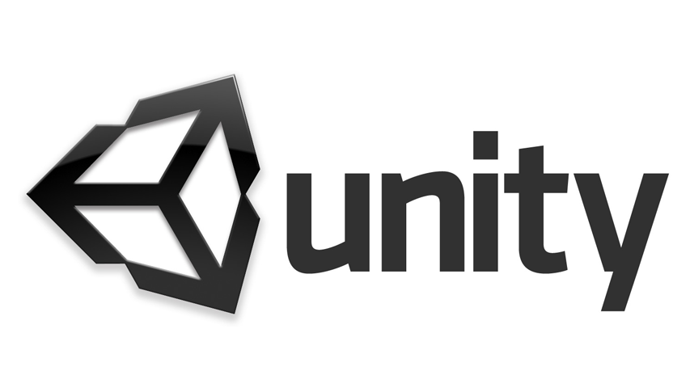
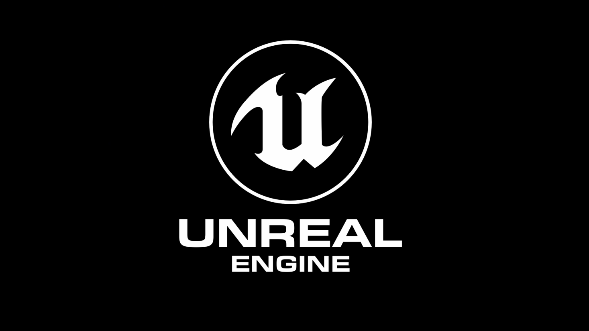
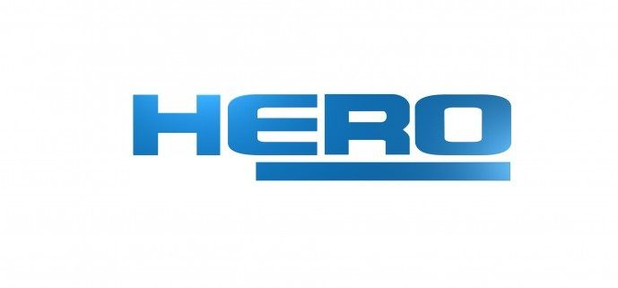

Unity 3D – отличный доступный движок. У него есть ряд неоспоримых преимуществ перед конкурентами и, пожалуй, ключевое из них в том, что за лицензию вы платите всего один раз. Неважно, насколько популярной становится игра – если вы выбрали Unity, вам не придется раскошеливаться еще раз. С финансовой точки зрения — это удачное решение, в особенности для стартапов и начинающих разработчиков.

Игровой движок, разрабатываемый и поддерживаемый компанией Epic Games. Первая игра, созданная на этом движке - Unreal - появилась в 1998 году.Unreal Engine – один из наиболее популярных движков для разработки ААА-игр.
Cry Engine 3 - является кроссплатформенным движком - он изначально ориентирован на IBM PC-совместимые компьютеры и игровые консоли Microsoft Xbox 360 и Sony PlayStation 3, а также на их последующие версии.Если внешняя составляющая игры – ваш пунктик, то вам нужен именно CryEngine 3.

Этот движок хорошо зарекомендовал себя в создании мультиплеерных игр – взять хотя бы Star Wars: The Old Republic. Лицензия довольно дорогая и вряд ли подойдет начинающим разработчикам, но если ваш проект амбициозен, то я бы советовал рассмотреть этот вариант.
Немногие могут конкурировать с широким спектром возможностей, которые предоставляет Rage Engine. Grand Theft Auto V, Red Dead Redemption и многие другие прославленные проекты сделаны при помощи этого движка.